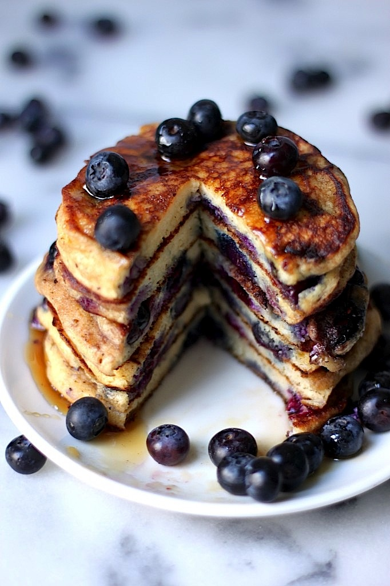

BlueBerry Pancakesss

Nutrition information
Per
Prep time: 5 mins
Servings: 4
Total time: 5 mins
Delcious paan caaakess
Read on to make some mighty taasty pancakes. They have the classic
ingredients plus a little pizazz given by them blueberriess.
Ingredients
- 1 1/2 cups dry pancake mix
- 1/2 cup flax seed meal
- 1 cup skim milk
- 2 eggs
- 1 cup fresh or thawed frozen blueberries
Directions
- Step 1: Set a notick skillet over a medium heat
- Step 4: In a medium bowl, stir together the pancake mix and flax seed meal.
In a seperate bowl or measuring cup, whisk together the mild an eggs.
Pour the liquid into the dry ingredients, and stir just until moistened.
- Step 3: Spoon 1/4 cupfuls of batter obnto the hot skillet. Sprinkle with as many blueberries
as desired. Cook until bubbles appear on the surface, then slip and cook until browned on
the other side.